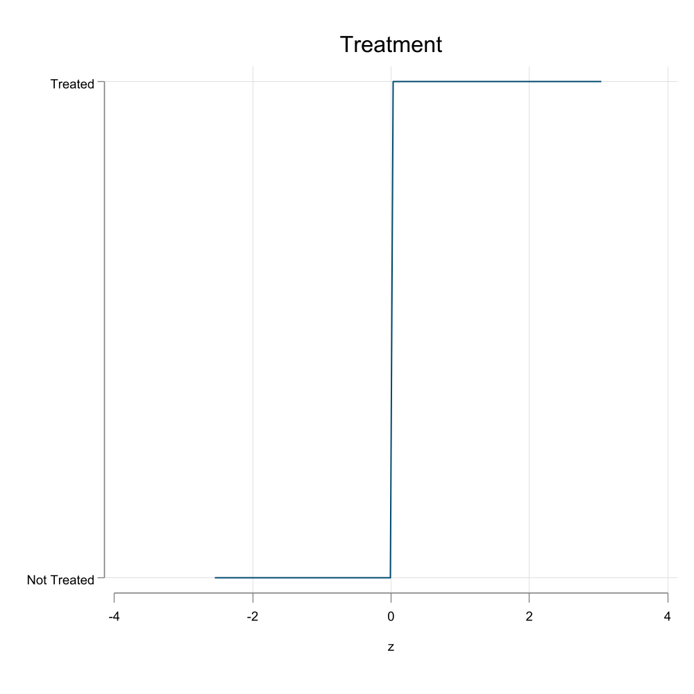
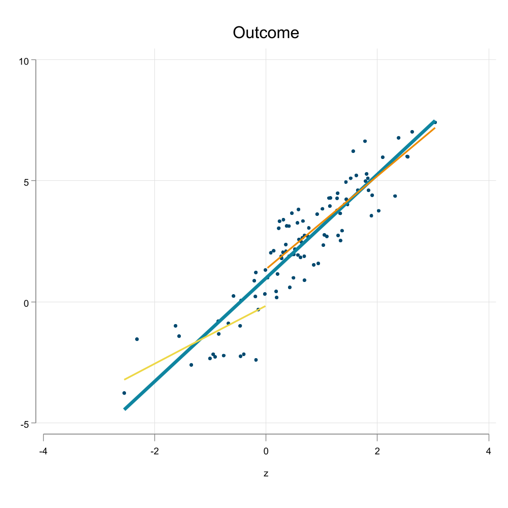
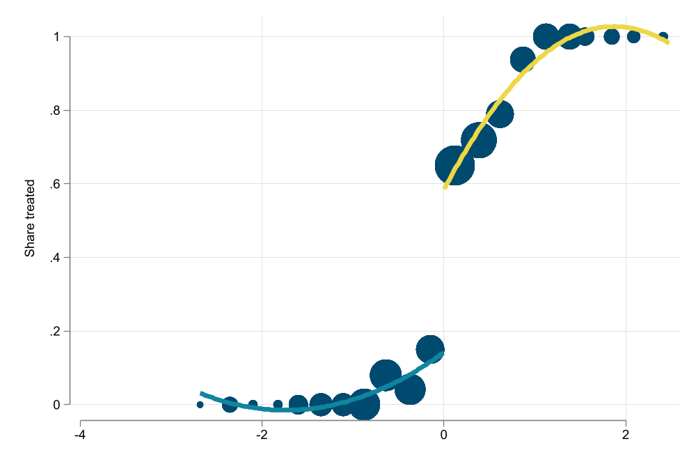
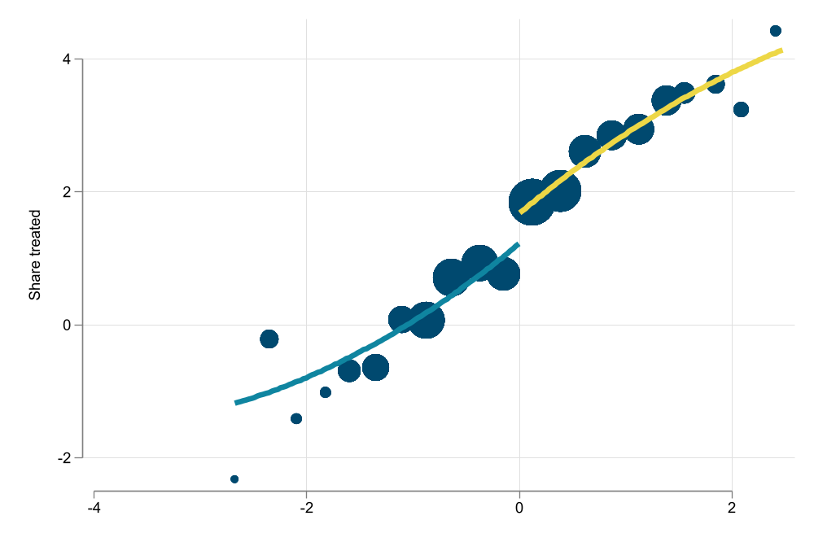
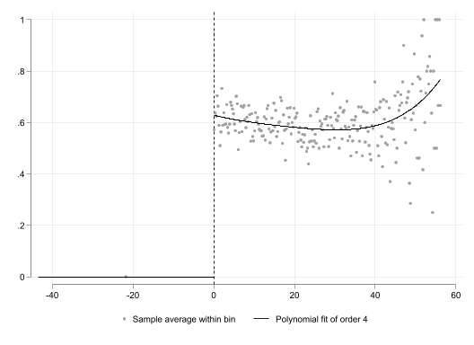
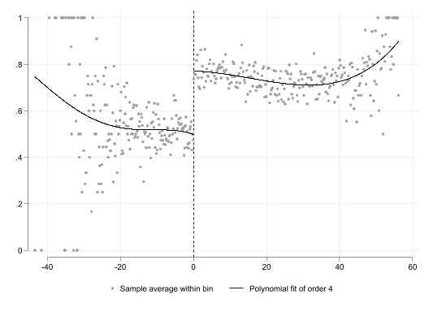

Up close, we are all the same
In the ideal world, where we can see all possible outcomes and scenarios of your potential treatments, it will be very simple to estimate treatment effects:
\[ \delta_i = Y_i(1)-Y_i(0) \]
This works because all observed and unobserved individual characteristics are kept fixed, except for the treatment Status.
\[y_i(D)=y_i(X,u,D)\]
So when comparing a person with himself (clones or parallel worlds), we know (or at least expect) that everything else is the same, and that differences between the two states are explained only by the treatment.
We do not observe both ALL States at the same time. People will either be treated or untreated, not both.
So what can we do?
We need to find good counterfactuals!
This means finding people are very similar to the ones treated, so they can be used as the examples of the “what if” question.
But there is a problem. Even in the best scenarios, we can never be asure about how to control for unobservables…or can we?
You can always RCT But it can be expensive
You can IV the problem but its hard to justify
You can add FE, but you have time varying errors
Then what?
RDD or Regression Discontinuity design is methodology that is known for its clean identification and with a relatively easy visualization tool to understand the identification, and solve the problem of unobserved distributions. (see here for a recent paper on how to make graphs on this).
In fact, the treatment Status has a very clear Rule!
Consider the following problem:
Say that we actually have access to the grades, which range from 100 to 200. And assume that you say, every one with grades higher than 170 will go to college.
Can you estimate the effect now?
In this case, your analysis is those individuals just above the thresholds to those just below (counterfactual)
Unless you think grades near the threshold are as good as random, then you have a design to identify treatment effects!
Selection and Index:
Perhaps the Most important: The score cannot be manipulated
You want the potential outcomes to be smooth functions of Z. (so we do not mix treatment effects with Nonsmooth changes in outcomes)


Recall that in an RCT (or under randomization) treatment effects are estimated by comparing those treated and those not treated.
\[E(y|D=1)-E(y|D=0)\]
Under SRDD, you can also think about the same experiment, except that we would need to compare individuals AT the theshold.
\[\begin{aligned} \lim_{z\downarrow c} E(y|Z=z) &- \lim_{z\uparrow c} E(y|Z=z) \\ E(y(1)|Z=c) &-E(y(0)|Z=c) \end{aligned} \]
The most simple way to proceed is to estimate the model using a parametric approach (OLS)
\[y = a_0 + \delta D_{z>c} + f(z-c) + e\]
The idea here is to identify a “jump” in the outcome (treatment effect) at the point where \(z\) crosses the threshold.
But to identify the jump only, we also need to model the trend observe before and after that threshold (\(f(z-c)\)), which can be modelled as flexible as possible. (this include interactions with the jump)
Alternatively, we could use smaller bandwidths (nonparametric)
While the Idea Scenario happens when there is perfect compliance (above the threshold you are treated), this doesnt happen all the time.
In the education example:
Sounds Familiar? (Never takers vs always takers)
When this happens, you can still do RDD, but you need more steps
Sounds Familiar?
You still need to estimate the effect as close to the Discontinuity as possible
ivregress may still do most of this for you


Effect:
There is a 0.45 effect on the outcome and a 0.44 effect on the treatment which imply a LATE of 1.03
Theoretical:
Empirical:
Manipulation of running variable may cause a non-smooth density in the running variable:
rddensity. In r install.packages(c(‘rdd’,‘rddensity’))In cases of nonrandom heaping, it may be possible to avoid the problem by restricting the data.
This is an example of measurement error, when individuals may “round-up/down” answers. And may occure near threshold.
This does not necessarily mean there is manipulation.
Possible Solution? Estimate RDD excluding observations around (excluding) threshold.
If treatment is locally randomized, then covariates should not be affected by discontinuity.
Alternatively, one could estimate effects on variables you know CANNOT be affected by the treatment
One could also implement a placebo test, checking the impact on a different threholds.
Impact of Scores on Scholarship recipiency
Impact on Enrollment

Instrumental variables 2SLS regression Number of obs = 23,132
Wald chi2(5) = 1645.56
Prob > chi2 = 0.0000
R-squared = 0.2845
Root MSE = .39876
-------------------------------------------------------------------------------
y | Coefficient Std. err. z P>|z| [95% conf. interval]
--------------+----------------------------------------------------------------
d | .4432824 .0215111 20.61 0.000 .4011214 .4854434
|
dx1#c.x1 |
0 | .0002949 .0019179 0.15 0.878 -.0034642 .0040539
1 | -.0034238 .000779 -4.39 0.000 -.0049507 -.0018969
|
dx1#c.x1#c.x1 |
0 | .0000741 .0000703 1.05 0.292 -.0000637 .0002119
1 | .0000616 .0000164 3.76 0.000 .0000295 .0000936
|
_cons | .5103635 .010876 46.93 0.000 .4890469 .5316801
-------------------------------------------------------------------------------
Instrumented: d
Instruments: 0b.dx1#c.x1 1.dx1#c.x1 0b.dx1#c.x1#c.x1 1.dx1#c.x1#c.x1 dx1(23,117 missing values generated)
(23,117 missing values generated)
----------------------------------------------------------------------------
(1) (2) (3) (4)
icfes_female icfes_age icfes_urm icfes_fams~e
----------------------------------------------------------------------------
d 0.0199 0.128 0.00791 0.0439
(0.80) (1.05) (0.65) (0.63)
----------------------------------------------------------------------------
N 14841 14799 14841 14801
----------------------------------------------------------------------------
t statistics in parentheses
* p<0.05, ** p<0.01, *** p<0.001